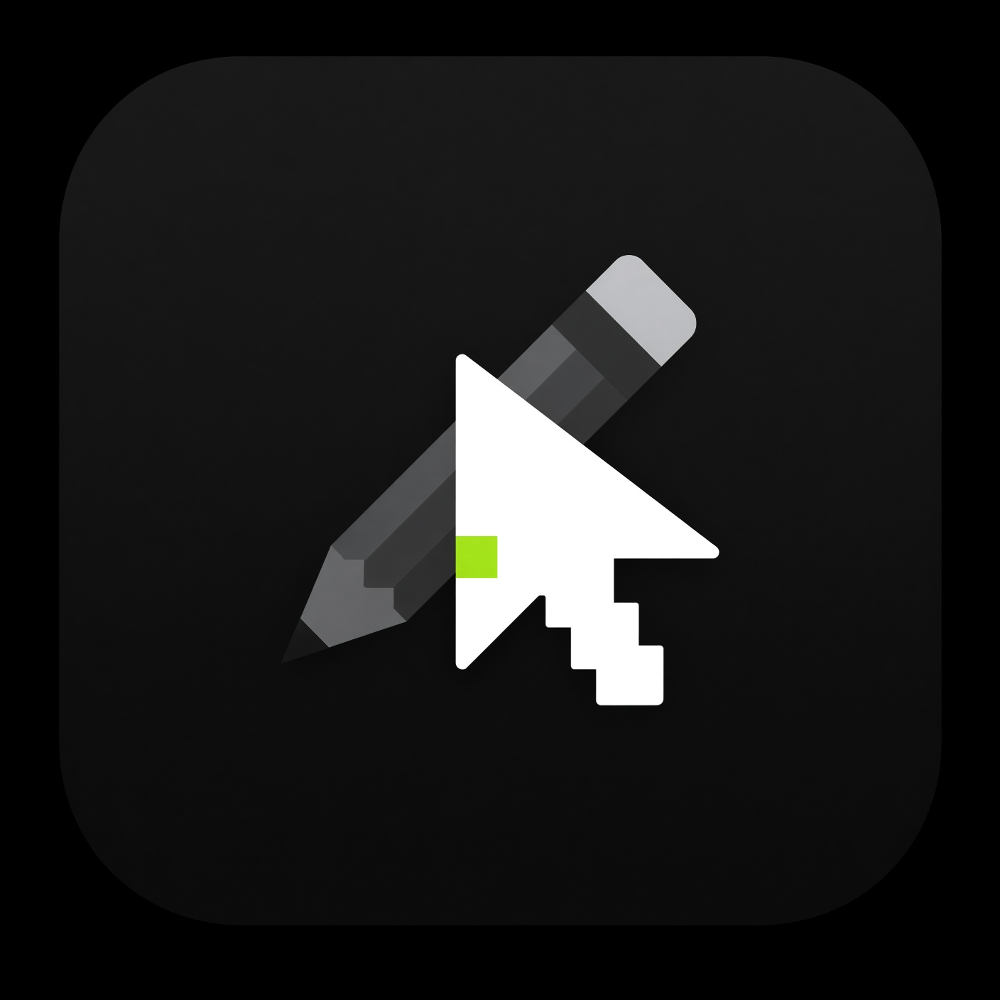

Hoş geldin, Carl
İmleçlerini kişiselleştirmeye devam et

İmleçlerini kişiselleştirmeye devam et
Bir arkadaşının paylaştığı .rbxcursor / .zip dosyasını buraya sürükleyip bırakabilirsin.
Her durum için bir .ANI dosyası seç. Animasyon atanan durumda Roblox’un sabit imleci gizlenir, yerine native animasyonlu imleç gösterilir. Kaldırılırsa statik imleç geri döner. Not: otomatik durum tespiti bazı oyunlarda ara sıra yanılabilir.
Türkçe / English
Kontrol ediliyor…
Roblox güncellendiğinde kayıtlı imleçlerini yeni sürüme otomatik olarak yeniden kurar.
Bilgisayar açıldığında uygulama otomatik olarak başlasın.
Pencereyi kapatınca uygulama çıkmaz, sistem tepsisinde çalışmaya devam eder. Tepsi simgesinden tekrar açabilir ya da tamamen çıkabilirsin.
Açılışta GitHub'a tek bir sürüm sorusu gönderir; yeni sürüm varsa haber verir. İndirme ve kurulum yalnızca sen onaylayınca başlar.
Her paket için kendi klavye kısayolunu belirle. Roblox içindeyken de çalışır.
Roblox'un kendi log dosyalarını (salt okunur) izleyerek açtığın oyuna göre eşlediğin paketi otomatik uygular. Roblox sürecine dokunmaz, ağa istek atmaz.
⚠️ Ayrıştırma mantığı gerçek log örnekleriyle henüz tamamlanmadı; bu açık olsa bile şu an hiçbir paketi otomatik değiştirmez.
Düzenleyicide kaydettiğin imleçler Geçmiş listesine eklenir. Kapatırsan yeni kayıt eklenmez; mevcut geçmiş silinmez.
RBX Cursor Studio — Yapımcı: Carl
© 2026 Carl. Tüm hakları saklıdır. Bu yazılımın yapımcının
yazılı izni olmadan kopyalanması, değiştirilip dağıtılması
veya paylaşılması yasaktır.
Görseli sürükleyerek konumlandır
Renklendir (siyah-beyazdan renk üret)
Yeni görseller açıldığında otomatik olarak 64×64 alana dengeli biçimde sığdırılır ve ortalanır.
Manuel ortala.
Cursoru gerçek piksel boyutunda, oyun içi bir sahne üzerinde test et.
Şu an kullanılan tüm imleçleri, boyut ve konumlarına dokunmadan seçtiğin renk tonuna boyar.